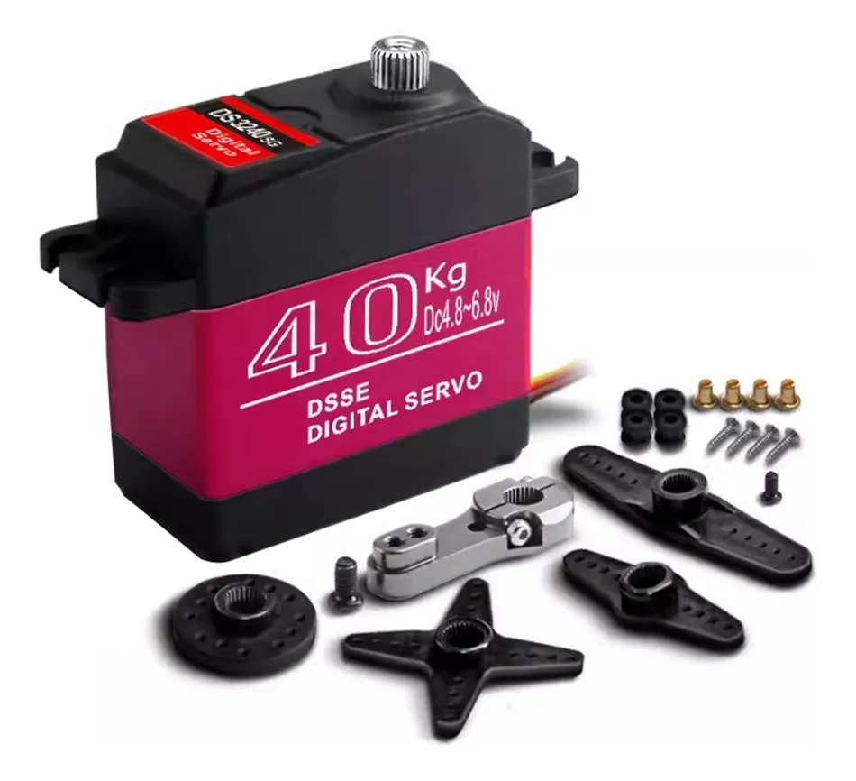
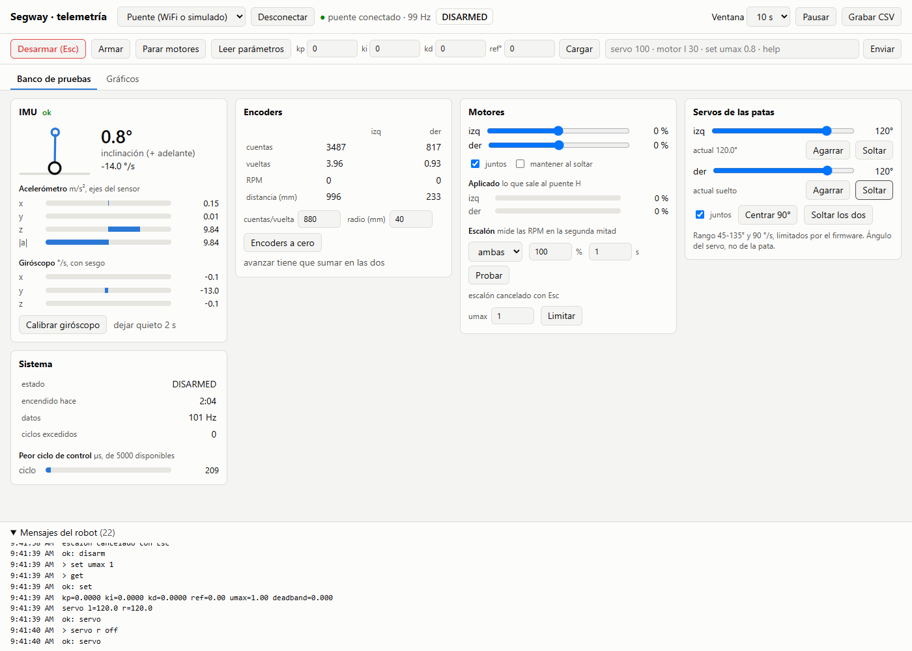

Robótica II · UNCUYO · Grupo 4
Un robot que no se cae
y aprende a bajar escaleras
Joaquín Calderón · Francisco Castel · Matías Armani
→ o espacio para avanzar · N notas · T reloj · F pantalla completa

Ruedas o patas: cada una tiene su problema
Ruedas
Rápidas y eficientes en lo plano.
Un escalón o un cordón las frena.
Patas
Pasan por casi cualquier lado.
Son lentas, gastan mucho y son difíciles de controlar.
¿Y si un robot tuviera las dos cosas?
Nuestro robot (segway_v02)
- 2 ruedas para mantenerse parado y avanzar
- 2 patas con rodilla para agacharse, estirarse y amortiguar
- 1.208 g listo para andar (962 g de chasis + 246 g de batería y placas)
- 200 correcciones por segundo para no caerse
Es como sostener una escoba parada en la mano
0,00 s
inclinación: 2°
Sin nadie que la corrija, la inclinación se duplica cada 94 milésimas de segundo.
Un parpadeo dura unas 300.
Sentir, pensar, mover… 200 veces por segundo
Sentir
Un «oído interno» (IMU) mide inclinación y giro; los contadores de rueda miden posición y velocidad.
Pensar
El control LQR combina esos 4 datos en una sola cuenta y filtra las vibraciones del chasis.
Mover
Los motores llevan las ruedas debajo del peso en apenas 2,3 milésimas de segundo.
Una vuelta completa cada 5 milésimas de segundo
¿Cómo piensa? Una sola cuenta con 4 ingredientes (LQR)
Regla de Bryson: para elegir esos 4 pesos le dijimos a la computadora qué nos molesta igual: 8° de inclinación importan lo mismo que correrse 10 cm del lugar.
Empujalo y mirá cómo se recupera
Simulación en vivo con la ley LQR y la velocidad de caída del robot real.
La paradoja: para ir hacia adelante, primero va hacia atrás
Nuestro robot retrocede 14 mm antes de avanzar 30 cm (sistema de «fase no mínima»).
¿Y las patas para qué sirven?
Altura de la cabina: —
Esperábamos que estirarlas lo hiciera más fácil de equilibrar, como una escoba más larga.
Sorpresa: el centro de masa sube al doble, pero cae casi igual de rápido (cambia un 7 %).
Las patas sirven para pasar obstáculos, amortiguar los golpes y agacharse.
Acto III
Huesos, músculos, nervios y cerebro
De la maqueta de banco al robot definitivo (segway_v02)
Huesos: plástico impreso en 3D que se dobla a propósito
Golpe sobre el motor de la pata al caer 18 cm
421 N es como apoyarle encima 43 kg.
Tres iteraciones en SolidWorks más el nuevo chasis con tapa para proteger las placas y la batería.
El plástico y las ruedas con relleno de gomaespuma se flexionan al aterrizar y reducen el golpe a menos de la mitad.
Como caer de un salto con las rodillas flojas en vez de trabadas.
Músculos: cuatro motores
2 motores de rueda
Mantienen el equilibrio y lo hacen avanzar (hasta 315 RPM con los nuevos drivers).
Cada uno cuenta cuánto giró su rueda: un paso cada 0,3 mm.

2 servos de pata
Mueven las rodillas. Cada uno levanta 40 kg con una palanca de 1 cm y tiene su propia fuente de energía.
Nervios: placas electrónicas hechas por nosotros
- Diseñadas a medida, pasadas al cobre con una plancha, atacadas con ácido y soldadas en el laboratorio.
- 3 medidores digitales de energía (INA219/INA226): sabemos cuánta corriente gasta cada rueda en vivo.
- 5 fusibles independientes y pines codificados para que nada pueda enchufarse al revés.
El salto a segway_v02: más fuerza y dos filtros antitemblor
1. Cambio de drivers: L298N → DRV8871 (MOSFET)
El driver viejo desperdiciaba 2 V en calor. El nuevo aprovecha toda la batería y da 44 % más de fuerza.
2. Dos filtros «Notch» contra la vibración (7,7 y 11,6 Hz)
«Ensordecemos» al control justo en las 2 frecuencias donde vibra el plástico: 12 veces menos temblor.
Cerebro de doble núcleo y tablero de mando

Núcleo 1 (tiempo real): lee sensores, filtra y actualiza motores en 2,3 ms (sobra la mitad del tiempo).
Núcleo 0 (comunicaciones): manda telemetría por WiFi a 50 Hz y graba ráfagas a 200 Hz en memoria.
Se maneja con un joystick de PlayStation 4 e incluye bloqueo de seguridad si las patas están flojas.
La balanza no miente: el robot se mide a sí mismo
Una de las barras de la pata
¡Cuatro veces más! Y la pata real estaba 10,4° más estirada.
Error del modelo al predecir el equilibrio
Veinte veces más preciso
Con la suite automática ensayos/ (E0 a E5) el robot mide por WiFi sus motores, su consumo y su equilibrio sin tocar un cable.
El desafío final: la escalera
6 escalones
de 16,6 cm de alto y 29 cm de pisada, y uno último de 3 cm
El problema
Si baja despacio, el frente de la cabina golpea el borde. Si baja rápido, no le alcanza el escalón para frenar.
Tres maneras de bajar
Animación ilustrativa de lo que dio la simulación. En el robot real todavía no se probó la escalera completa.
Evolución artificial: 5.300 caídas en la computadora
0
intentos simulados
Como la selección natural: las maniobras que bajan mejor «tienen hijos» que se parecen a ellas.
Cada candidata se probó en 24 situaciones: batería baja, piso resbaloso, ruedas más blandas…
La ganadora bajó en las 24. Tardó unos 50 minutos.
Y la computadora nos dio una idea de diseño
Con la cabina como está, pasa a 2 cm del borde.
Recortando 2 cm la punta de abajo de la cabina, pasa a más de 3,5 cm en todas las pruebas.
Acto V
Ahora, en vivo
- Parado solo y quieto con las placas definitivas (
segway_v02) - Un empujón suave: cómo responde el LQR
- Agacharse y estirarse cambiando las ganancias en vivo
- Paseo con el joystick de PS4
El proyecto en números
listo para andar con LiPo
multiplicaciones cada 5 ms (LQR)
filtros Notch antitemblor
placas hechas a mano + 3 INA
protocolos automáticos por WiFi
bajadas simuladas
¡Gracias!
¿Preguntas?
Joaquín Calderón · Francisco Castel · Matías Armani